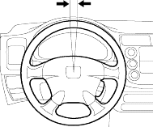
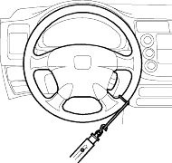

- Turn the front wheels to the straight ahead position.
- Measure how far you can turn the steering wheel left and right without moving the front wheels.
- If the play is within the limit, the gearbox and linkage are OK.
- If the play exceeds the limit, adjust the rack guide (see page 17-13). If the play is still excessive after rack guide adjustment, inspect the steering linkage and gearbox (see page 17-5).
ROTATIONAL PLAY: 0 - 10 mm (0 - 0.39 in.)

- Check the power steering fluid level (see page 17-25) and pump belt tension (see page 17-23).
- Start the engine, let it idle, and turn the steering wheel from lock-to-lock several times to warm up the fluid.
- Attach a commercially available spring scale to the steering wheel. With the engine idling and the vehicle on a clean, dry floor, pull the scale as shown and read it as soon as the tyres begin to turn.
- If the scale reads no more than 29 N (3.0 kgf, 6.6 lbf) the gearbox and pump are OK.
- If the scale reads more than 29 N (3.0 kgf, 6.6 lbf), check the gearbox and pump.

EPS:
- Start the engine, let it idle.
- Attach a commercially available spring scale to the steering wheel. With the engine idling and the vehicle on a clean, dry floor, pull the scale as shown and read it as soon as the tyres begin to turn.
- If the scale reads no more than 29 N (3.0 kgf, 6.6 lbf). If it reads more, check for steering linkage (see page 17-5).